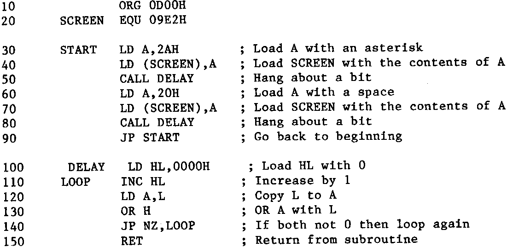

INMC 80 News |
May–September 1981 · Issue 4 |
| Page 48 of 71 |
|---|

One thing is quite clear when writing it out in mnemonic form, and that is I got it wrong in part 3. The JP NZ is wrong, you look. You see, it’s so easy to make mistakes when writing code and not using labels. Go on, have a look. Point proven? Well we all make mistooks. I would have spotted that had I used labels.
Got all that, good, now as one final convenience, let’s number the lines, because there’s a fair amount of discussion to follow now, and I’m getting fed up typing it out each time. From now on I’ll refer to labels and line numbers.
First, notice line 10, I’ve introduced a new assembler directive, ‘ORG’. Now up till now, we haven’t supplied any information as to where the program is going to reside in memory. The origin of the program has not been spelled out. In part 3, the program started at 0D00H, and that’s as good a place as any, so lets declare the origin of the program, ORG 0D00H. (Notice the ‘0’ in front, that’s so the address doesn’t get confused with the label). Notice also that I’ve put an extra carriage return between the declarations at the front and the main routine, and between the main routine and the subroutine. (I was going to say I’d split up into ‘byte size’ chunks, but such appalling puns are beneath even my meagre wit.) Anyway, by separating the program thus, it’s easy to see what each bit is about.
Now to tidy the program up a bit. One one the major omissions is the use of absolute jumps instead of the quicker and simpler relative jumps. Ok, so what is a relative jump you ask (except those adept at the art of Granny Stomping, and brother, have you got it wrong)? A relative jump is a jump that does not go to an absolute location, but is relative to the current contents of the program counter. This is one of the improvements the Z80 has over the 8080, and is very useful. It means that if a routine is written entirely in relative code (meaning relative jumps are used throughout), then it’s not tied to any specific location in memory, and therefore can run anywhere (I know it’s a glaring simplification, before the know-alls start jumping up and down, I’m not writing this for you). Secondly, relative jumps require fewer bytes than absolutes. Anyway a relative jump is easy to understand, the important thing to remember is that it’s relative to the Current contents of the program counter. Remember, the PC increments by one each time it fetches an op-code or operand byte, so let us suppose we put a relative jump at memory location 1000H, the code for this would be, say:
1000 18 05 JR xxxx ; Jump to label xxxx
| Page 48 of 71 |
|---|